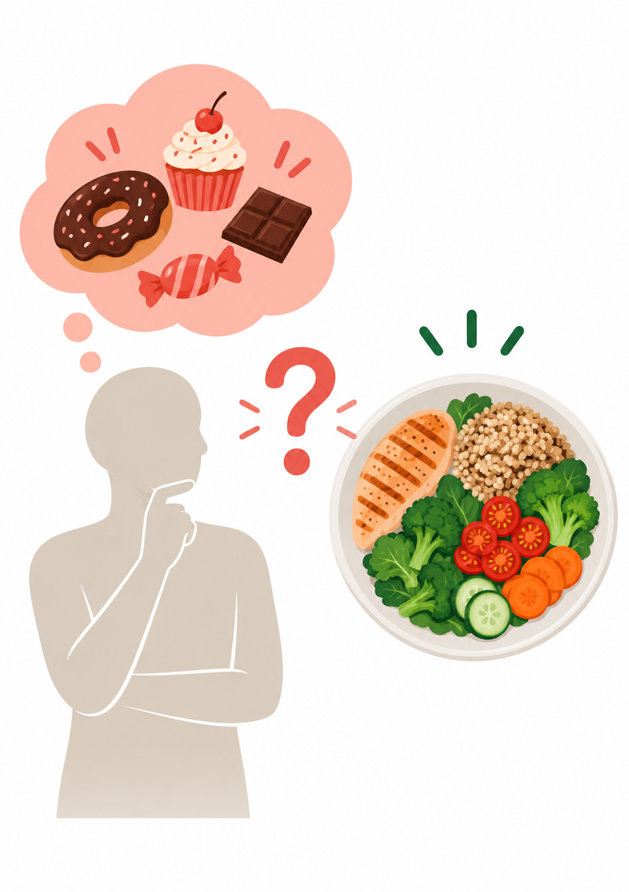
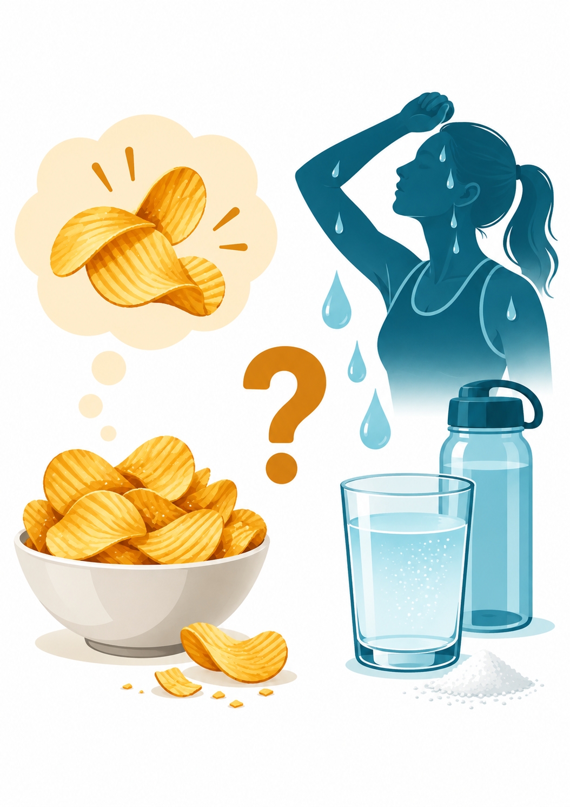
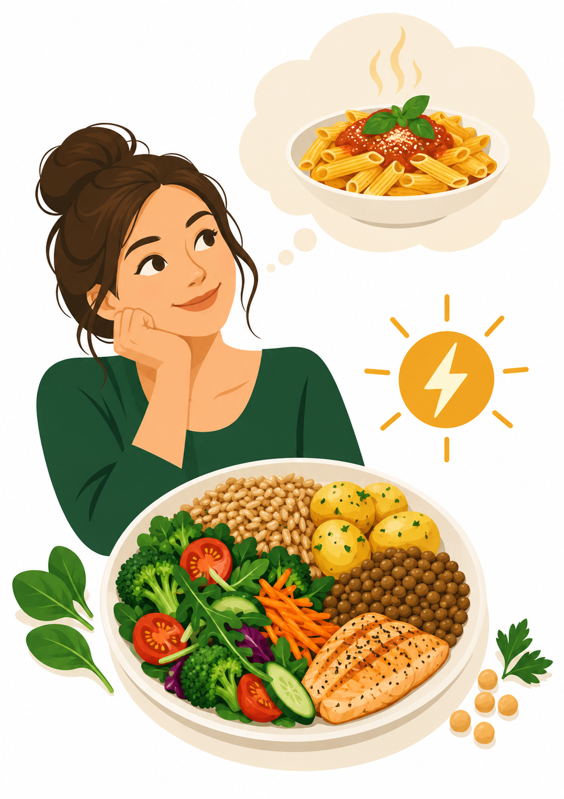
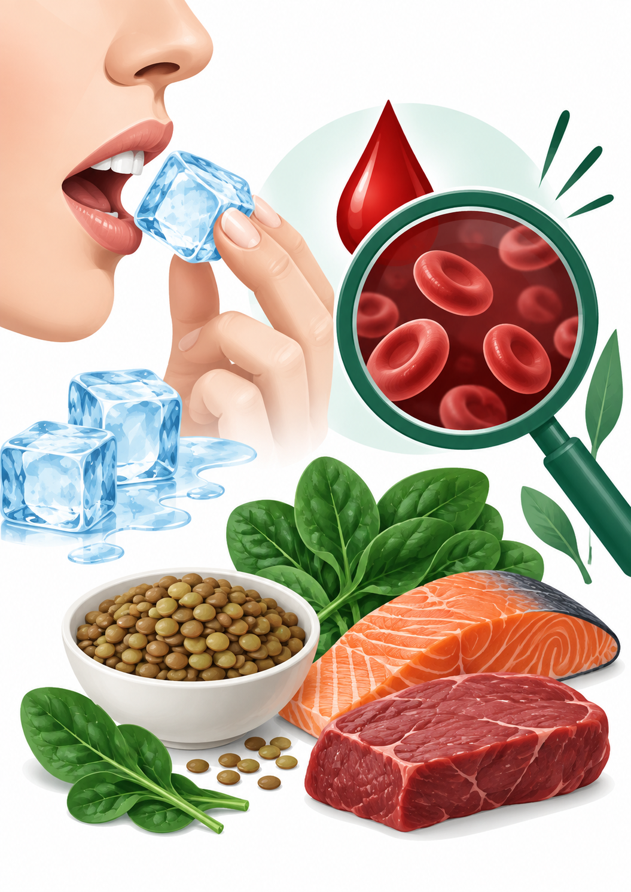

Kun mieli hakee makeaa
Voimakas makeanhimo harjoituspäivänä voi liittyä pitkään ateriaväliin, liian niukkaan energiansaantiin, vähäiseen hiilihydraattien saantiin tai helposti palkitsevan ruoan saatavuuteen. Proteiini voi lisätä kylläisyyttä, mutta makeanhimo ei yksin osoita proteiinin puutetta.
Tarkista kokonaisuus
- Onko ennen harjoitusta syöty riittävästi ja tarpeeksi ajoissa?
- Sisältävätkö pääateriat hiilihydraatin, proteiinin, kasvikset ja rasvan?
- Onko palautumisateria jäänyt väliin tai siirtynyt useita tunteja?
- Onko ruokavaliota rajoitettu niin paljon, että nälkä kasaantuu iltaan?

Suolainen ruoka, hikoilu ja nesteytys
Suolaisen ruoan himo ei tavallisessa arjessa osoita elektrolyyttivajetta. Pitkäkestoinen liikunta, kuuma ympäristö ja runsas hikoilu voivat kuitenkin kasvattaa nesteen ja natriumin menetystä. Hikoilunopeus ja hien suolaisuus vaihtelevat yksilöllisesti.
Tarkista kokonaisuus
- Kuinka pitkä ja kuormittava harjoitus oli?
- Oliko ympäristö kuuma tai varustus raskas?
- Jäikö vaatteisiin tai iholle valkoisia suolajälkiä?
- Muuttuiko kehon paino harjoituksen aikana selvästi?
- Onko mukana oksentelua, ripulia, huimausta tai poikkeavaa heikotusta?

Hiilihydraatit ja matala energiansaatavuus
Pastan, leivän tai muun hiilihydraattipitoisen ruoan halu voi voimistua energiavajeessa, mutta juuri tietyn ruoan himo ei todista vajetta. Olennaisempaa on, jääkö elimistölle riittävästi energiaa perustoimintoihin sen jälkeen, kun harjoittelun kulutus on huomioitu.
Seuraa laajempia muutoksia
- Harjoitusteho laskee tai totuttu vauhti tuntuu jatkuvasti raskaalta.
- Palautuminen, uni, keskittyminen tai mieliala heikkenee.
- Sairastelu, rasitusvammat tai luustoperäiset vaivat lisääntyvät.
- Paino laskee suunnittelematta tai nälkä kasautuu iltaan.
- Kuukautiskierto muuttuu tai hormonitoimintaan liittyvä hyvinvointi heikkenee.

Jään pureskelu ja raudan tila
Pakonomaisella jään syömisellä tai pureskelulla on nimi: pagofagia. Se voi liittyä raudanpuutteeseen ja ansaitsee urheilijalla tarkemman arvion. Rauta osallistuu hapenkuljetukseen ja energiantuotantoon, joten puute voi näkyä väsymyksenä, hengästymisenä, suorituskyvyn laskuna tai hitaampana palautumisena.
Riski voi kasvaa
- kestävyyslajeissa ja suuressa harjoituskuormassa
- runsaiden kuukautisten yhteydessä
- kasvisruokavaliossa ilman suunniteltua raudan saantia
- toistuvan verenluovutuksen, vatsaoireiden tai niukan energiansaannin yhteydessä
Yhteinen tulkintamalli
Eri ruokahimot kannattaa käsitellä samalla järjestyksellä. Näin yksittäisestä mieliteosta ei tehdä liian pitkälle menevää päätelmää, vaan havainto yhdistetään harjoitteluun ja ruokailun kokonaisuuteen.
1. Havainto
Kirjaa mitä teki mieli, milloin ja kuinka voimakkaasti.
2. Tausta
Vertaa tilannetta harjoituskuormaan, ateriaväliin, uneen, stressiin ja nesteytykseen.
3. Yksi muutos
Muuta yhtä asiaa 7–14 päiväksi: esimerkiksi välipalaa, hiilihydraattien ajoitusta tai juomista.
4. Uusi arvio
Arvioi himon lisäksi harjoitusvire, palautuminen, uni ja mahdolliset oireet.
Jatka havainnosta seurantaan
Tämän sivun tehtävä on auttaa tunnistamaan tilanteita. Seuraavalla sivulla samat havainnot muutetaan seitsemän päivän kartoitukseksi, hallituksi ruokavaliokokeiluksi ja suorituskyvyn seurannaksi.